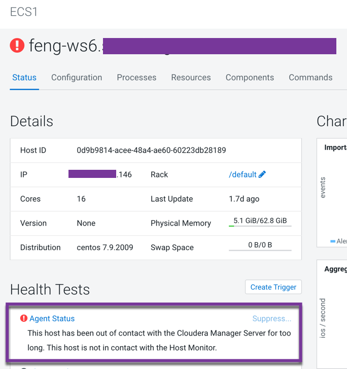
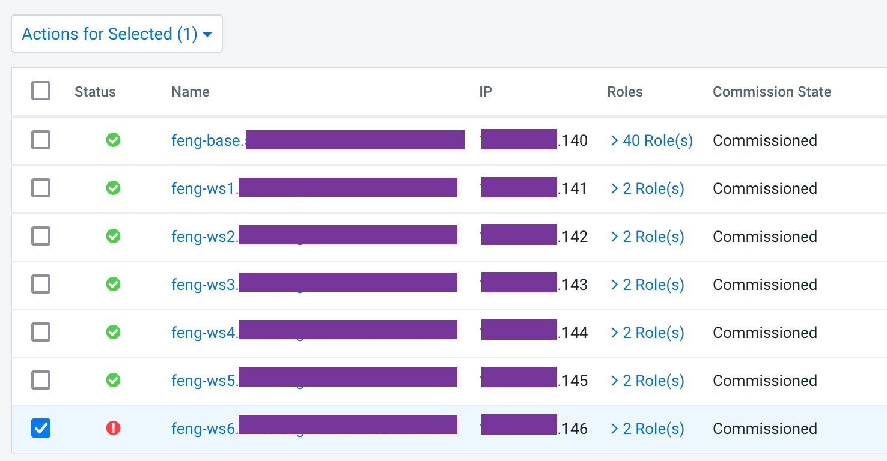
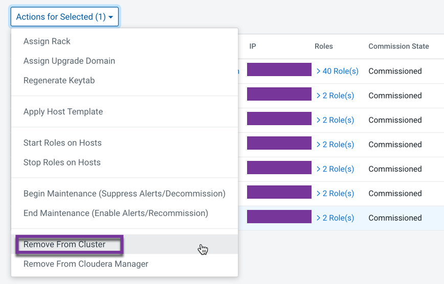
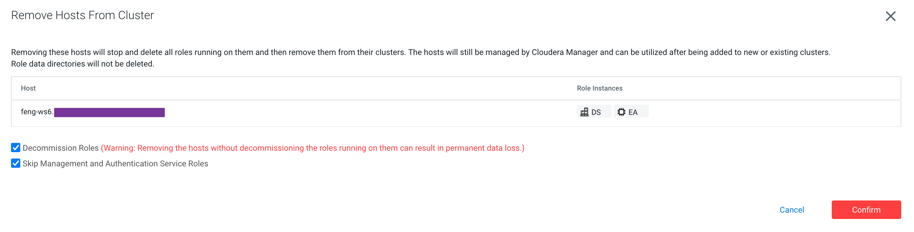
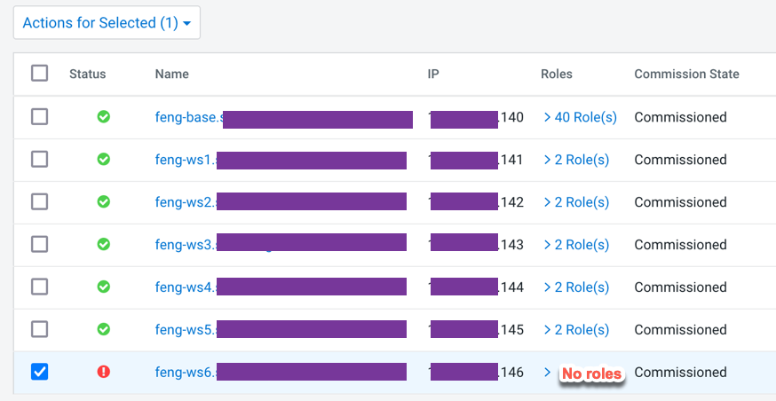
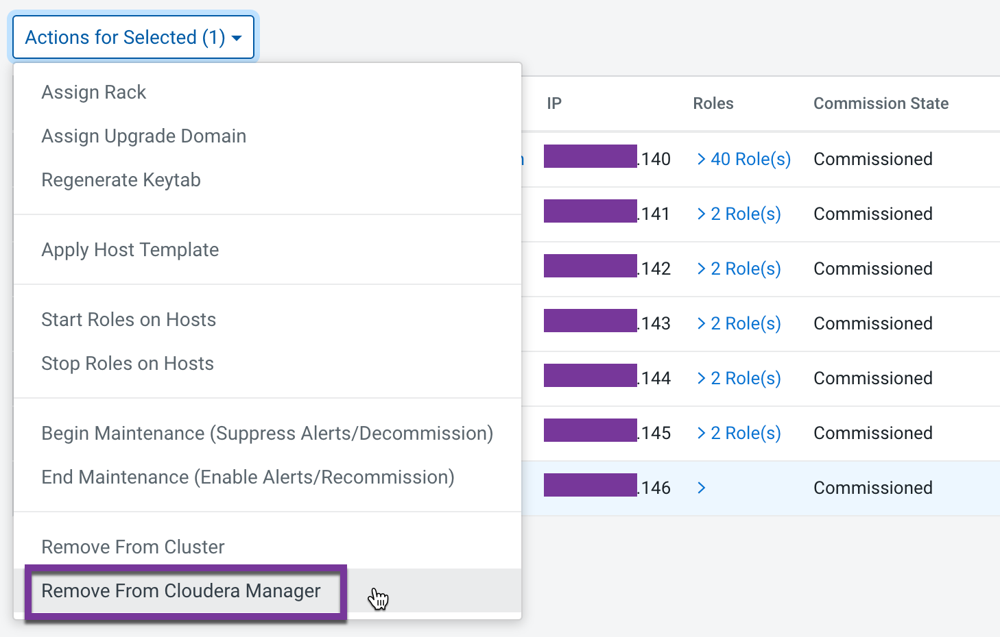
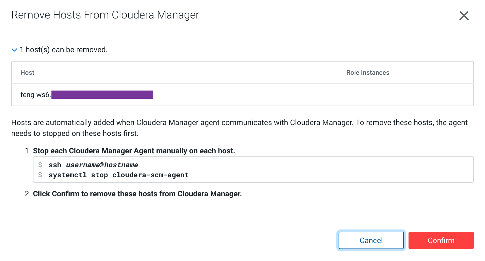

Remove failed worker node from the existing ECS cluster
Remove failed worker node from the existing ECS cluster
- Introduction to the test environment
- Check if node ds06.ecs.openstack.com is going down
- Remove node from Kubernetes Cluster
- Remove node From ECS Cluster
- Remove node From Cloudera Manager
- Destroy node ds06
Introduction to the test environment
| CDP Runtime version | CDP PvC Base 7.1.7 |
| CM version | Cloudera Manager 7.5.5 |
| ECS version | CDP PvC DataServices 1.3.4 |
| OS version | Centos 7.9 |
| K8S version | RKE 1.21 |
| Whether to enable Kerberos | Yes |
| Whether to enable TLS | Yes |
| Auto-TLS | No, using manual TLS |
| Kerberos | AD |
| LDAP | AD |
| DB Configuration | External Postgres 12 |
| Vault | Embedded |
| Docker registry | Embedded |
| Install Method | Internet |
| IP addresss | hostname | description |
| 192.168.8.140 | ds00.ecs.openstack.com | CDP Base cluster, only a single node |
| 192.168.8.141 | ds01.ecs.openstack.com | ECS master node 1 |
| 192.168.8.142 | ds02.ecs.openstack.com | ECS master node 2 |
| 192.168.8.143 | ds03.ecs.openstack.com | ECS master node 3 |
| 192.168.8.144 | ds04.ecs.openstack.com | ECS worker node 1 |
| 192.168.8.145 | ds05.ecs.openstack.com | ECS worker node 2 |
| 192.168.8.146 | ds06.ecs.openstack.com | ECS worker node 3 |
Check if node ds06.ecs.openstack.com is going down
- Error 1: Failed to receive heartbeat from agent ds06

- Error 2: Node ds06 is not ready
# kubectl get node NAME STATUS ROLES AGE VERSION ds01.ecs.openstack.com Ready control-plane,etcd,master 22d v1.21.8+rke2r2 ds02.ecs.openstack.com Ready control-plane,etcd,master 22d v1.21.8+rke2r2 ds03.ecs.openstack.com Ready control-plane,etcd,master 22d v1.21.8+rke2r2 ds04.ecs.openstack.com Ready <none> 22d v1.21.8+rke2r2 ds05.ecs.openstack.com Ready <none> 22d v1.21.8+rke2r2 ds06.ecs.openstack.com NotReady <none> 22d v1.21.8+rke2r2 - Error 3: Most of pods on Node ds06 are keeping in terminating state
# kubectl get pods -A -o wide --field-selector spec.nodeName=ds06.ecs.openstack.com NAMESPACE NAME READY STATUS RESTARTS AGE IP NODE NOMINATED NODE READINESS GATES default-cbdec3c5-monitoring-platform monitoring-prometheus-kube-state-metrics-6ffcdcb5b4-ljgfq 2/2 Terminating 0 2d1h 10.42.4.27 ds06.ecs.openstack.com <none> <none> infra-prometheus infra-prometheus-operator-1-1652500324-prometheus-node-expgjddh 1/1 Running 0 22d 192.168.8.146 ds06.ecs.openstack.com <none> <none> kube-system kube-proxy-ds06.ecs.openstack.com 1/1 Running 0 2d6h 192.168.8.146 ds06.ecs.openstack.com <none> <none> kube-system nvidia-device-plugin-daemonset-wnq8p 1/1 Running 0 22d 10.42.4.5 ds06.ecs.openstack.com <none> <none> kube-system rke2-canal-b8n4k 2/2 Running 0 22d 192.168.8.146 ds06.ecs.openstack.com <none> <none> longhorn-system engine-image-ei-d4c780c6-zwmbm 1/1 Running 0 22d 10.42.4.4 ds06.ecs.openstack.com <none> <none> longhorn-system instance-manager-e-da42b727 1/1 Terminating 0 2d2h 10.42.4.15 ds06.ecs.openstack.com <none> <none> longhorn-system instance-manager-r-c7bd215e 1/1 Terminating 0 2d2h 10.42.4.16 ds06.ecs.openstack.com <none> <none> longhorn-system longhorn-csi-plugin-28rv2 2/2 Running 0 22d 10.42.4.3 ds06.ecs.openstack.com <none> <none> longhorn-system longhorn-manager-zh9f9 1/1 Running 0 22d 10.42.4.6 ds06.ecs.openstack.com <none> <none> shared-services log-router-979c8 2/2 Running 0 10d 10.42.4.2 ds06.ecs.openstack.com <none> <none>
Remove node from Kubernetes Cluster
- Delete node using kubectl commands
# kubectl delete node ds06.ecs.openstack.com node "ds06.ecs.openstack.com" deleted - Check the status of available nodes and now we don’t see ds06 again
# kubectl get node NAME STATUS ROLES AGE VERSION ds01.ecs.openstack.com Ready control-plane,etcd,master 22d v1.21.8+rke2r2 ds02.ecs.openstack.com Ready control-plane,etcd,master 22d v1.21.8+rke2r2 ds03.ecs.openstack.com Ready control-plane,etcd,master 22d v1.21.8+rke2r2 ds04.ecs.openstack.com Ready <none> 22d v1.21.8+rke2r2 ds05.ecs.openstack.com Ready <none> 22d v1.21.8+rke2r2 - Pods in
terminatingstate can be removed from the apiserver after the failed Node is manually deleted.
Remove node From ECS Cluster
- In the Cloudera Manager Admin Console, go to Hosts > All Hosts. Select the hosts to delete.

- Select Actions for Selected > Remove From Cluster. The Remove Hosts From Cluster dialog box displays.

- Leave the selections to decommission roles and skip removing the Cloudera Management Service roles. Click Confirm to proceed with removing the selected hosts.

Remove node From Cloudera Manager
- In the Cloudera Manager Admin Console, go to Hosts > All Hosts. Select the hosts to delete.

- Select Actions for Selected > Remove from Cloudera Manager.

- Click Confirm to remove the failed host from Cloudera Manager.

Destroy node ds06
- If you want to replace this failed node with a new one, you need to destroy node ds06, then see the steps in the [docs].